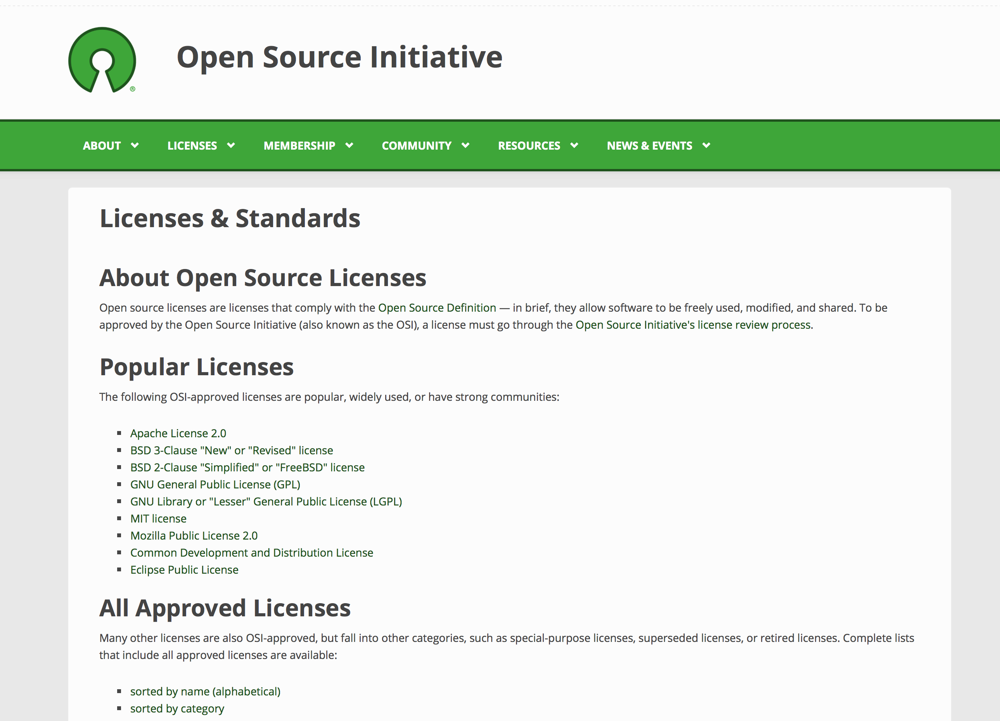
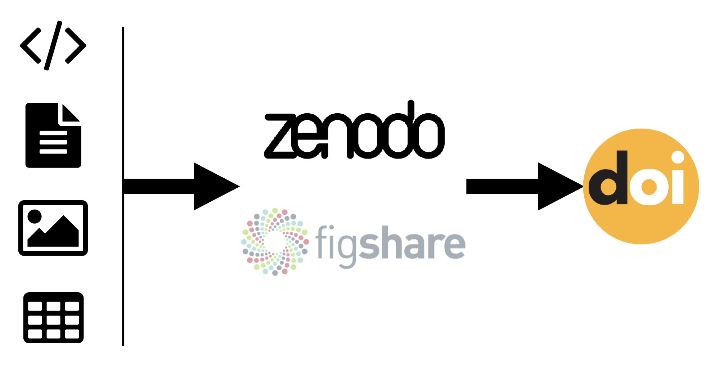
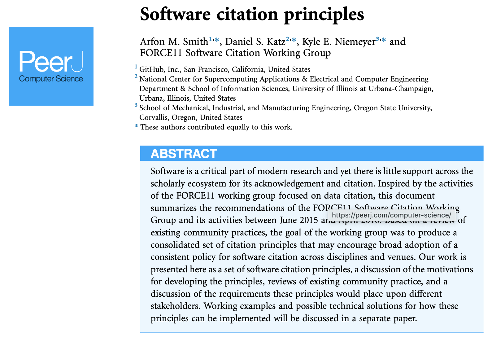
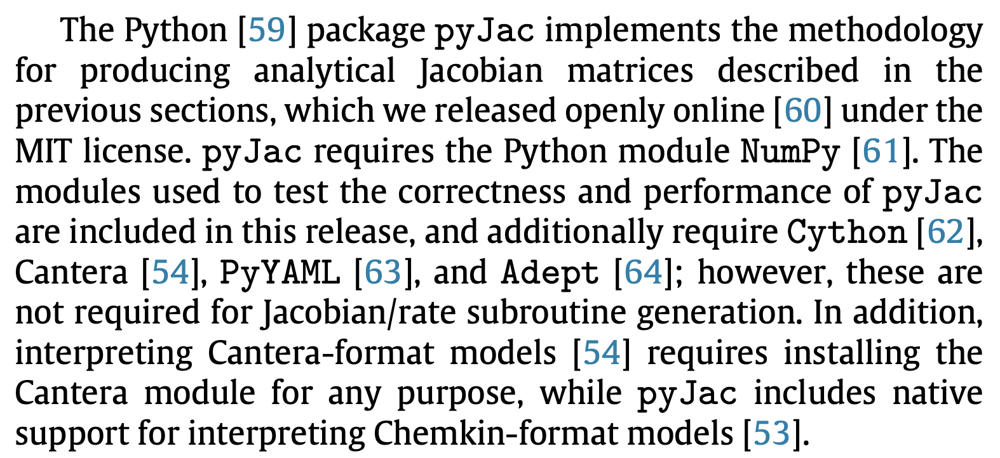
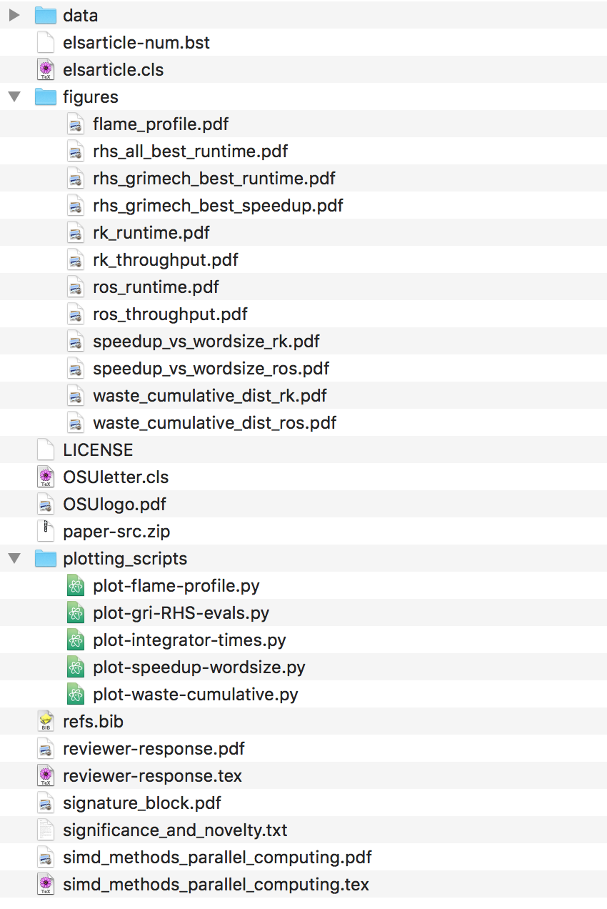
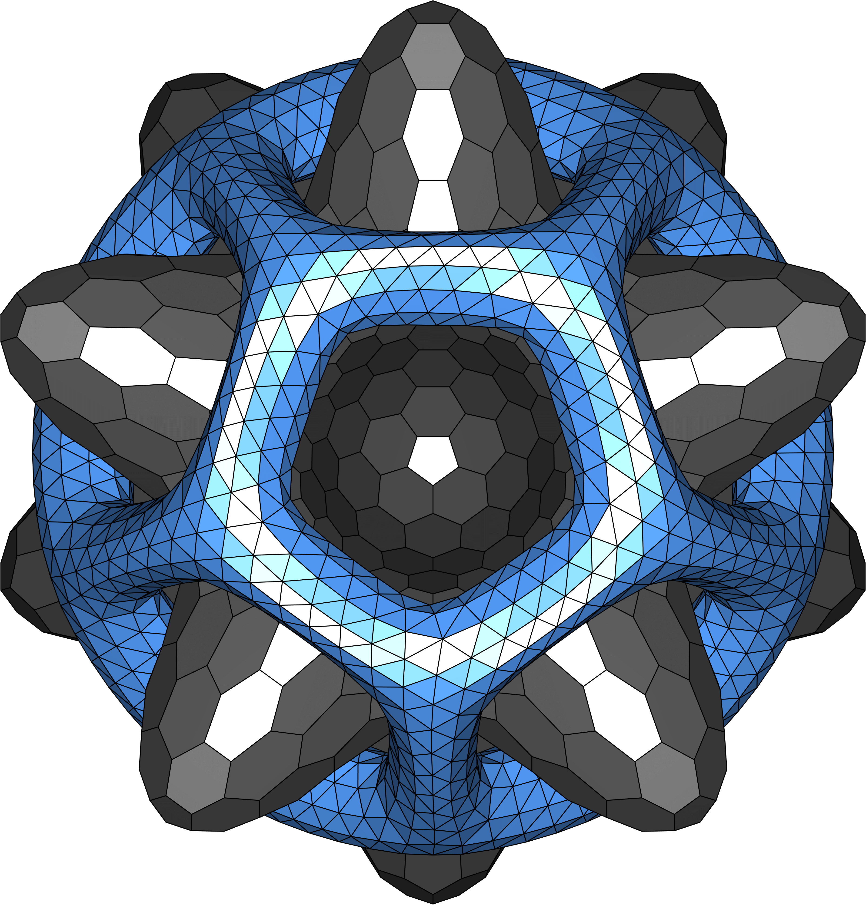
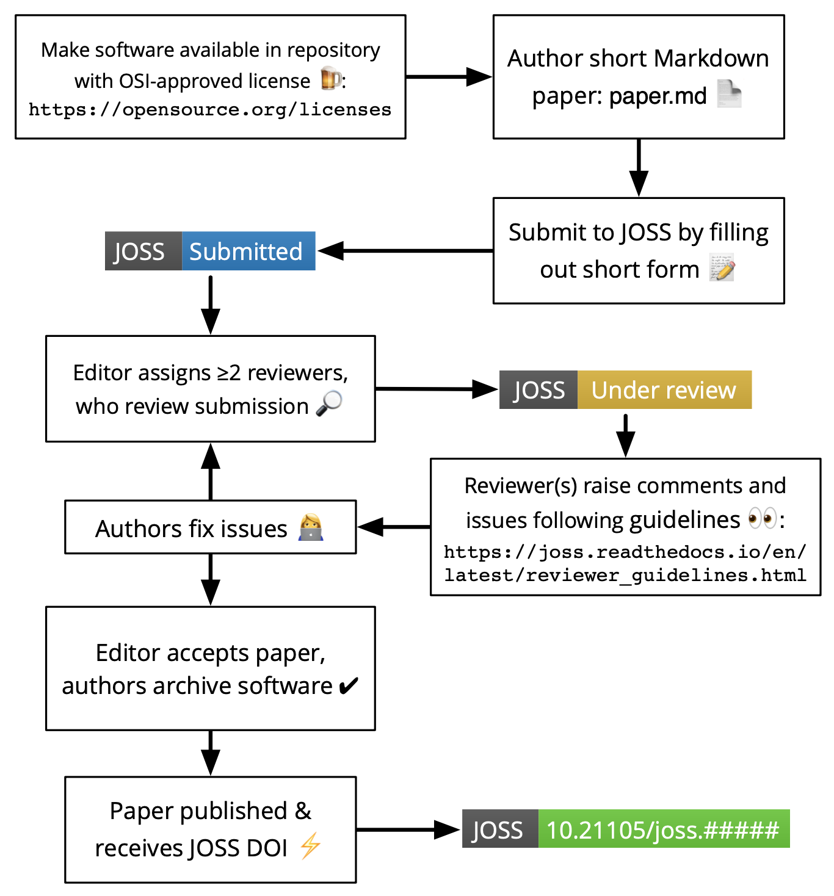
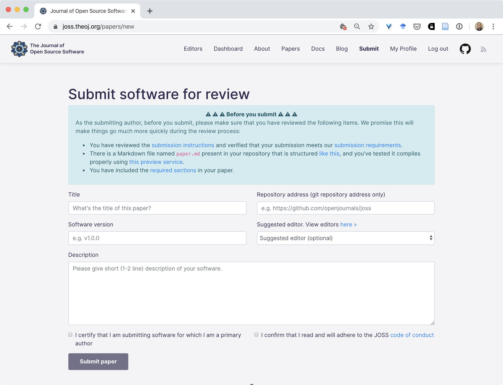
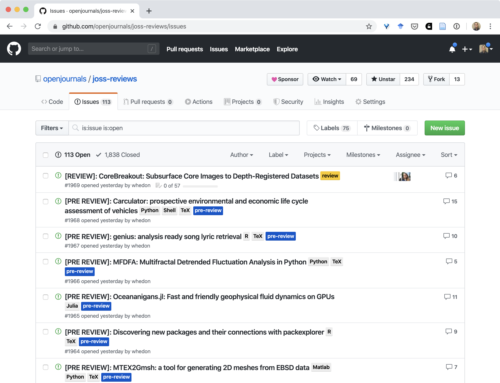

Open Practices and Software Citation
Topics:
- Licensing and copyright
- Open science practices
- software citation
- reproducibility
- publishing your software
Software Licenses & Copyright
Important: I AM NOT A LAWYER!
AKA: IANAL
Copyright
Facts and ideas are not copyrightable.
Expressions of ideas are copyrightable
Copyright Examples
Game rules are not copyrightable (chess, Go, football, Dungeons & Dragons).
Expressions of game rules are copyrightable.

Copyright Examples 2
A function that computes standard deviation of values: name choices and concept of the function are not copyrightable.
The std() code actually computes the standard deviation is copyrightable.
Basic Copyright
“Right of First Publication”: copyright automatically goes to the first creator of any creative work
(Even if not explicitly specified)
Consequence: if you post software to GitHub without an explicit license, then you own the copyright—even if openly and publicly visible.
By default, no one else is legally allowed to use or modify your work.
Software Licenses
All software codes you make publicly available should be accompanied by a software license describing the terms by which others may use and/or modify your code.
Public Domain
Alternatively, you can put work into the public domain: “This work has been placed in the public domain.”
Free for anyone and everyone to use and modify.
Literature examples: Sherlock Holmes, Frankenstein
(There are some tricky issues internationally, however.)
Software Licenses
Kinds of software licenses: proprietary, and free/open source (FOSS, FLOSS, OSS)
Pick an existing license. Do not create your own.
FOSS categories: permissive, and “copyleft”
Permissive licenses: BSD 3-clause, MIT; allow further distribution under any license
Copyleft licenses: GPL; require modifications to be shared under the same license (“viral”)
HTTPS://CHOOSEALICENSE.COM

Open Source Initiative Licenses

Which license to use?
When in doubt, use a permissive license like the BSD 3-clause or MIT licenses.
Copyrighting other creative works: Creative Commons
- BY: Attribution
- SA: ShareAlike
- ND: NoDerivatives
- NC: NonCommercial
Licenses: CC BY, CC BY-SA, CC BY-NC, CC BY-NC-NC
Beyond copyright & licenses
Patents: cover ideas and concepts; modern issues with “patent trolls”
Trademarks: symbols that represent a business or organization
Export control: government may forbid the transfer of source code (and data, ideas) to another country or foreign national without permission
HIPAA compliance: software that deals with human patients must be anonymized
Long story short: pick a license when creating a project, and put as LICENSE.txt in your repo.
We’ve talked about best practices:
- Version control / collaboration
- Licensing
- Packaging / distribution
- Documentation
Is that it?
Software citation
How to make your software citable?
Add a CITATION.cff file:
cff-version: 1.2.0
message: "Please cite the following works when using this software."
type: software
title: Title
abstract: Title
authors:
- family-names: ...
given-names: ...
orcid: ...
affiliation: ...
doi: ...
repository-code: ...
url: ...
keywords: ...
license: ...For research, need one more step: archiving software (or data)
Consider: what if you use/cite software, and someone modifies it?

Zenodo + GitHub = ❤️
Zenodo can be connected to GitHub, and set to automatically archive releases
Live demo time… connecting GitHub to Zenodo

Recommended workflow:
git tag -a v0.0.1 -m "version 0.0.1"git push origin --tags- Go to GitHub repo -> Releases -> v0.0.1
- Create release from tag
- Grab the DOI from Zenodo!
Citing software & data is important.
Our research results depend on software and data—different versions of software and data change our answers.
Without proper citations, your work is not reproducible.
Also, academia relies on citations for credit. (for better or worse)
Software citation principles

Smith AM, Katz DS, Niemeyer KE, FORCE11 Software Citation Working Group. (2016) Software citation principles. PeerJ Computer Science 2:e86 https://doi.org/10.7717/peerj-cs.86.

How to cite?
Name/description
Author(s)/developer(s)
DOI or other persistent identifier
Version number/commit hash
Location (e.g., GitHub repo)
(If there’s a paper describing it, cite that too)
Where to cite?
In the text with the references/bibliography.

KE Niemeyer, NJ Curtis, & CJ Sung. “pyJac: analytical Jacobian generator for chemical kinetics” (2017) Computer Physics Communications, 215:188–203. https://doi.org/10.1016/j.cpc.2017.02.004
Reproducibility
Repro-packs
Lorena Barba describes “reproducibility packages” associated with papers, with figures shared under CC-BY license:
“For every figure that presents some result, we bundle the files needed to reproduce it — input or configuration files used to run the simulation(s) behind the result; code to process raw data into derived data; and scripts to create output graphs — and deposit them together with the figure into an open-data repository, such as Figshare. Figshare assigns the bundle a DOI, which we then include in the figure caption so readers can easily find the data and re-create the result.”
My practice:
- Produce a single repro-pack for an entire paper, which contains:
- Python plotting scripts and associated results data
- Figures (PDFs for plots, always)
- Any other relevant data: input files, configuration files, etc.
- Upload to Figshare/Zenodo under CC-BY license
- Cite using the resulting DOI in the associated paper(s)
Benefits
Improving reproducibility and impact of your work
Reviewers will love you with this one great trick!
It also lets you reuse your figures without violating the journal copyright. (Yes, when published, the journal owns the paper and everything in it that isn’t licensed from somewhere else.)

Publishing your software
JOSS: Journal of Open Source Software

Developer-friendly journal for research software packages
Affiliate of Open Source Initiative
Open access & no fees
If you’ve already licensed your code and have good documentation then we expect that it should take less than an hour to prepare and submit your paper to JOSS.

JOSS paper submission

JOSS reviews

Also consider submitting a talk/paper to SciPy!
Tentative tracks:
- Machine Learning, Data Science, and Generative AI
- Playing Nice: Scientific Computing Across Languages
- General
- Earth/Ocean/Geo
- Social Science/Humanities/Economics/Human Systems
- Materials science/Chemistry
- Data Vis and Image Processing